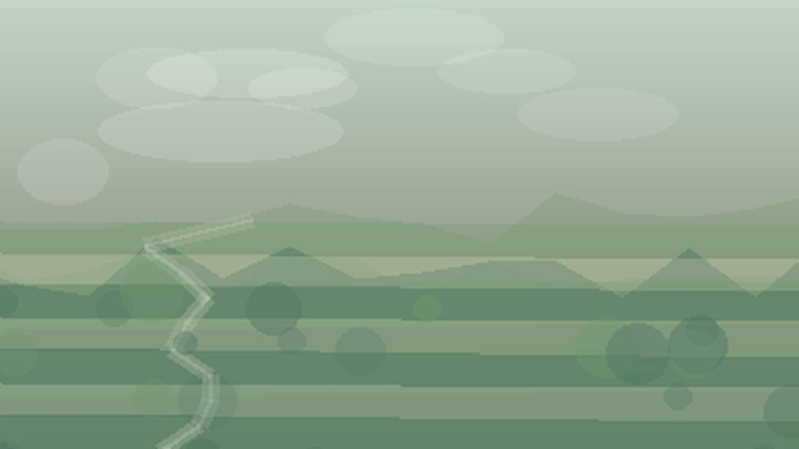

Главная / Республика Карелия

Республика Карелия
Что посадить
Что посадить
в Республике Карелия
Выберите природную зону в Республике Карелия: условия внутри региона различаются по теплу, влаге, ветру и длине сезона.
северная зона: короткий сезон и прохладное лето требуют ранних сортов, укрытий и самых устойчивых культур. Ориентиры внутри зоны: Кемь, Беломорск.
Открыть страницу зоны → центральная зонацентральная зона: прохладная лесная зона подходит для базового огорода, ягодников и устойчивого сада. Ориентиры внутри зоны: Петрозаводск, Кондопога.
Открыть страницу зоны → южное Приладожьеюжное Приладожье: прохладная лесная зона подходит для базового огорода, ягодников и устойчивого сада. Ориентиры внутри зоны: Сортавала, Олонец.
Открыть страницу зоны →